0.92.25｜上一版新增的 300 件商品已換成這批像素素材，保留原商品 ID 與功能。家具依用途設定不同寬高，均不超過 40×36 像素；椅子 18×26、貓跳台 22×36、手把 16×10、地毯 40×16。每系列有五種款式。
預設顯示四倍最近鄰預覽。點擊圖片切換原生尺寸；有點亮圖的商品可切換開關預覽。此圖鑑直接引用遊戲圖片。
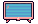
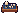
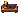
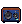
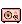
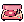
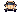
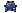
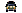
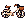
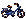
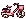
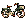
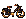
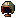
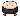
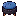
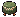
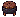
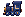
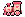
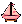
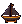
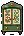
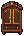
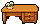
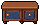
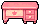
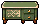
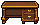
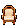
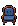
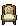
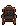
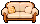
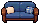
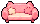
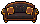
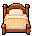
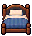
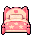
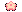
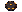
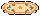
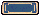
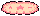
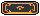
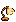
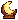
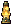